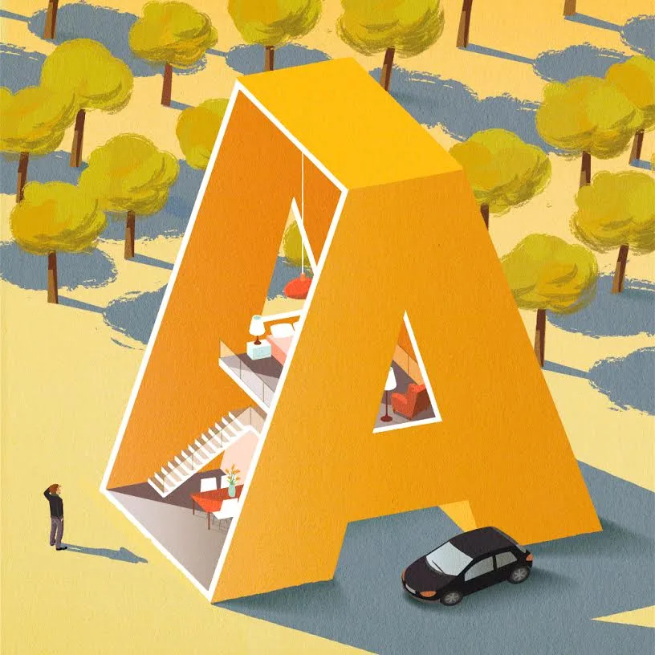

Pas 7. Els elements de les històries infantils
Bones imatges i bons textos potser no fan bones històries. Saber quins elements narratius conformen una història et permetrà fer-te preguntes per valorar la qualitat de cada obra.
En una narració algú explica a algú altre la història d'algú, situat en un temps i en un lloc, a qui li passa alguna cosa especial, que es va desenvolupant, de forma cohesionada, fins que se soluciona d’alguna manera.
Et recordes del conte El petit polzet?
Adaptació J. Cela; Quelot (il.). El petit polzet. Barcelona: La Galera, 1998
Quins són i com són els elements bàsics d’una narració?
- Sentim la veu del narrador que ens explica (“Una vegada hi havia un matrimoni de boscaters...”)
- La història que li ha passat a algú altre (“un nen nomenat Petit Polzet”)
- El narrador ho sap tot sobre aquesta història, així que confiem que ens l’explicarà bé (què fan els personatges, què diuen, què pensen...) (“llavors va decidir”, “l’ogre va pensar que...”)
- Si vol, el narrador pot interrompre la història i adreçar-se directament al lector, com si estigués explicant un conte oralment (“però no patiu, perquè llavors...”)
- L’explica en l’ordre en què han passat els fets (“llavors... després... més tard...”)
- I com si pogués haver passat realment, així que mentre dura, fem veure que ens creiem que els ogres existeixen i que el Petit Polzet va solucionar el seu problema
Al lector, de qui no s’esperen coneixements culturals concrets o a qui se li donen prou pistes per interpretar la història sense ambigüitats.
- una, de sola, només la del Petit Polzet
- una història que va passar fa temps: “Una vegada..” i que segueix un motlle de gènere: en l'exemple del Petit Polzet es tracta d'un conte popular
- d’un personatge: fàcil d’identificar, sense complexitats psicològiques: “el fill petit”
- en un escenari: fàcil d’identificar: “vivien en una casa dins del bosc”
- que té un conflicte extern i amb una causa ben clara: “són tan pobres que els abandonen al bosc”
- que es desenvolupa a través de causes i conseqüències de manera travada: “com que va tirar molles de pa, els ocells se les van menjar, com que els ocells se les van menjar, no van saber tornar…”
- i es resol al final amb la desaparició del conflicte: “van tornar rics a casa”
Ara bé, els elements bàsics poden incorporar algunes complexitats i desviar-se de la forma més simple de narrar. En aquests casos, els bons autors tenen en compte que han d'acompanyar el seu destinatari, infant o jove, perquè aquest pugui interpretar encertadament la història.
- El narrador és un personatge de la història. Per exemple, si n’és el protagonista explica la seva aventura.
- El narrador només sap què passa, no què pensen els personatges, això ho haurem de deduir.
- De sobte retrocedim per saber alguna cosa que va passar abans (per exemple la història d’un personatge que apareix) i després tornem on érem.
- Es juga amb les regles narratives, fent-nos triar un final o fent que els personatges sàpiguen que són personatges del conte, etc. És a dir, amb recursos que anomenem metaficcionals.
- Per entendre l’obra s’ha de conèixer un altre conte, és a dir, l’obra juga amb la intertextualitat.
- L’obra juga amb l’ambigüitat (això va passar o ho ha somiat? volia realment això?).
- Hi ha més d’un fil argumental: dins de la història se n’intercalen d’altres.
- Es barregen els gèneres: un conte popular és alhora una narració de detectius.
- El personatge té la seva complexitat psicològica, el veiem canviar.
- El conflicte és intern, com la gelosia o el dol per alguna mort, i per tant haurà de tenir una solució d’evolució psicològica.
- El final queda obert (realment se’n va sortir?).
Com s'organitza una història?
Les narracions s’estructuren en una cadena d’esdeveniments que es desenvolupen temporalment (després...després...) en forma de causes i conseqüències (com que va fer allò, va passar això, com que...).
Per fer-ho, l’autor adopta una organització determinada que pot correspondre a un gènere, que vindria a ser com un tipus d'edifici. Un gènere que es podrà reconèixer igual que, a primera vista, podem saber si som davant d’un gratacels o un iglú.

Il·lustració Marta Pau. La metàfora de l’edifici està inspirada en un text d’Ana Díaz-Plaja recollit al llibre de T. Colomer (dir.) (2002). Siete llaves para valorar las historias infantiles. Madrid: Fundación Gernán Sánchez Ruipérez. Podeu descarregar-lo al web del grup GRETEL
Podem dir que els inicis de les narracions ens conviden a entrar a l’edifici; el temps i l’espai on passa la història ens assenyalen la disposició i l'aspecte de les habitacions.
L’estructura ens permet saber si té dues plantes, si és al voltant d’un pati central o al llarg d’un passadís amb habitacions a banda i banda o bé si és laberíntica.
Quan la recorrem, la trama ens revela l’ordre en què la visitarem, la intriga ens motiva a seguir i el final ens indica la porta de sortida.
En aquest recorregut ha d’haver-hi una bona selecció dels elements que s’expliquen i un bon ritme en la manera de fer-ho. La visita ha de tenir el seu ritme perquè puguem apreciar la casa, sense anar massa de pressa si cal fixar-se en el jardí, ni cansar-nos de la visita per culpa de massa explicacions.
Les narracions estan fetes, doncs, amb diversos elements: la veu que explica, l'argument del que explica, el ritme amb què ho fa, els personatges que apareixen, etc. Cadascun d'aquests elements ha d'estar ben construït perquè “la casa” s'aguanti i ens agradi.
Tot l'entramat d'elements que configuren les narracions no sempre s'aguanta ni funciona amb l'equilibri que hauria de tenir. Com a lectors o com a educadors ho hem de saber detectar.
Fixa’t en quins elements narratius poden recaure els errors o desajustaments quan les obres no acaben de funcionar i associa cada frase d'aquesta llista sobre possibles defectes dels llibres amb l'element narratiu que ha fallat en cada cas (A-F). Posa el número de cada frase al costat de l'element al qual es refereixi (si cliques a la pestanya de la dreta hi tens la solució. Et recomanem, però, que no la consultis fins que no ho hagis intentat):
- En la història que explica i com s’organitza
- En la veu que explica la història (i en la veu dels personatges)
- En la qualitat del text, la imatge i la relació de tots els elements
- En els personatges
- En el tema i la informació que dona
- En la referència que fa a altres històries (intertextualitat)
- Frases 1-10-11-24-26-27-28
- Frases 2-9-25
- Frases 3-7-8-17-18-22-21
- Frases 4-6-19-20
- Frases 5-12-13-16
- Frases 14-15-22-23
Busca un llibre infantil que no t’hagi agradat per alguna de les raons vistes a les frases anteriors o per altres del mateix tipus i fes una intervenció en el fòrum dient:
- El títol i l’editorial del llibre.
- El problema que li trobes, tot explicant el que calgui del llibre perquè s’entengui la teva objecció. Fes-ho amb frases breus d’aquest tipus: “el problema és XXXX perquè XXXXX, tal com es pot veure en XXXX, o en XXXX”.
- Després d’aquesta primera intervenció, pots intervenir lliurement sobre el tema.